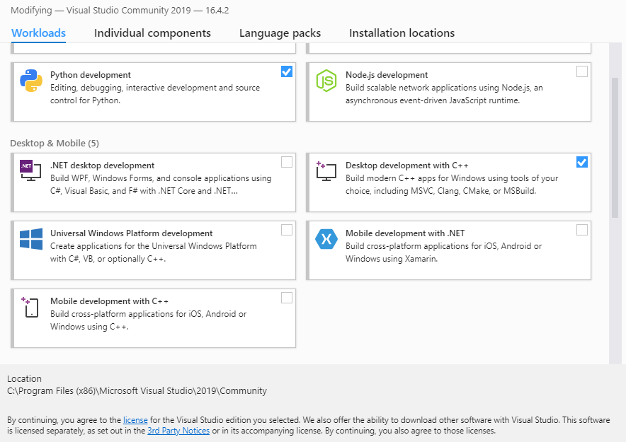
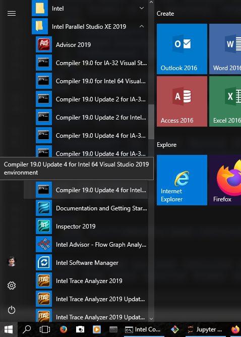
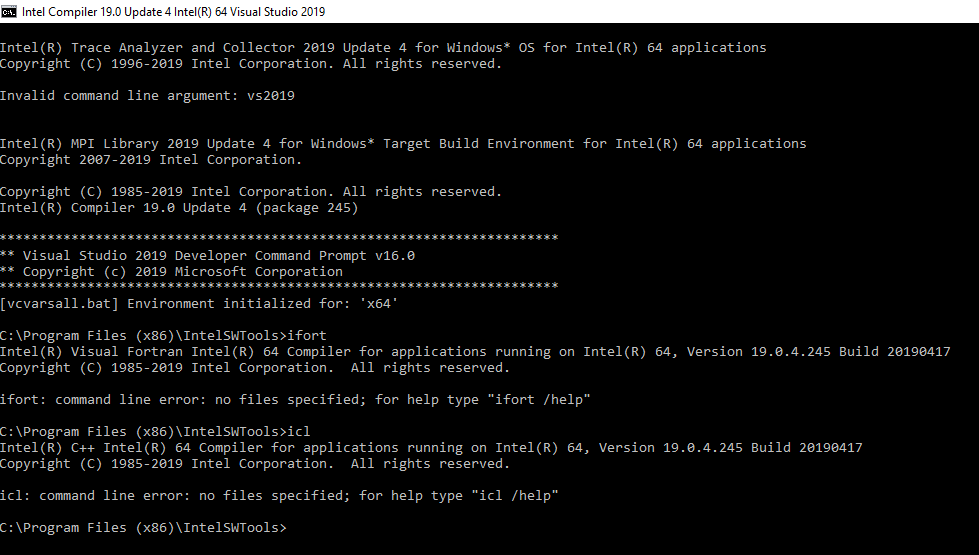

The Intel OneAPI HPC toolkit provides a wide variety of High-Performance numerical libraries and tools, most importantly, the Intel Fortran and C/C++ compilers.
However, its installation, particularly, on Windows systems can be a bit tricky.
Here are the steps required to take to properly install the Intel OneAPI compilers on Linux/macOS/Windows:
If you are a Linux/macOS user move on to step 2.
If you are a Windows user,
Download a recent version of Microsoft Visual Studio (MSVS) Community edition installer
which is available free of charge.
Run the Microsoft Visual Studio installer.
Once you see the following prompt window, make sure you select at least the C++ components to install on your system (if you do not want all of the components).
This component selection is essential for successful installation of Intel OneAPI components and compilers,

Once the installation is complete, you may need to reboot your system.
Download Intel OneAPI Base Toolkit from its dedicated website.
Follow the installation instructions provided by Intel to install the Base Toolkit.
Download Intel OneAPI HPC Toolkit from its dedicated website.
Follow the installation instructions provided by Intel to install the HPC Toolkit.
This component contains all Intel products relevant to scientific computing, parallel computing, and C/C++/Fortran compilers.
Your installation is complete (you may need a reboot again).
If you are on Windows,
You can now access intel compilers and tools from within the Microsoft Visual Studio application.
You can also use the use Intel’s provided Windows command-line environment (CMD) that comes with all the Intel OneAPI.
This environment contains all paths to Intel applications predefined to help build your applications on the command line, much like a Linux environment.
In the long run, you will likely find the command line much more convenient than the GUI interface that the Microsoft Visual Studio application offers.

On all platforms, whether Windows or Unix, you can now open the relevant terminal (Intel CMD on Windows and Bash/dash/zsh/… terminal on Linux/macOS)
to test whether the Intel compilers have been correctly installed by typing ifx to invoke the Intel Fortran compiler or icl to invoke the Intel C++ compiler,
The following snapshot demonstrates the usage on Windows CMD terminal,
